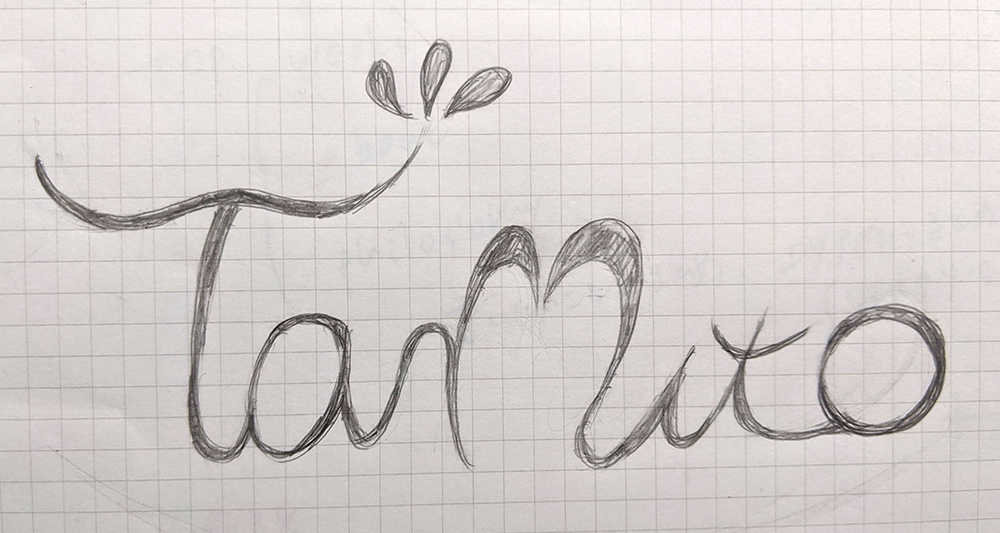
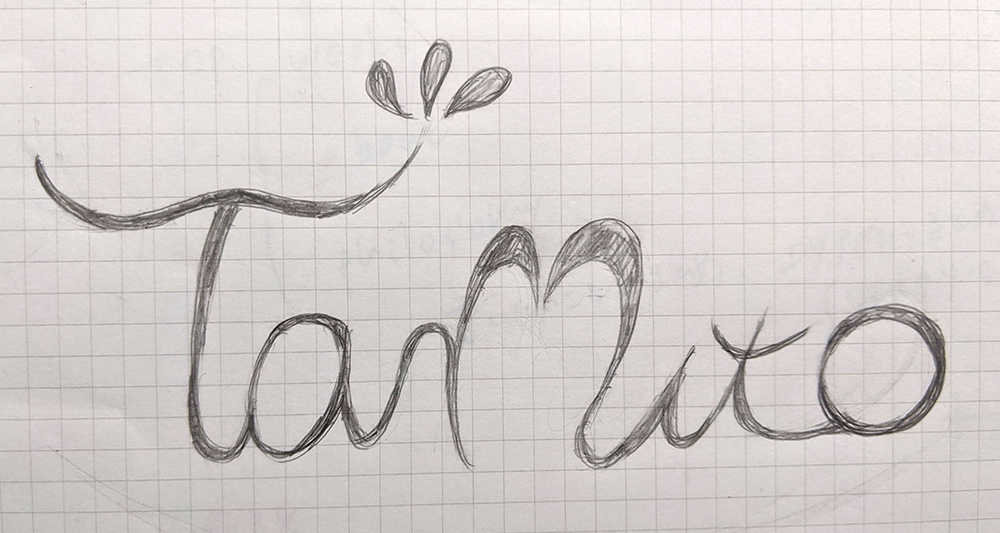

Product design
良いものを安く可愛くがコンセプトの、マツエクサロン(新店舗)でのロゴ募集への応募作品。
・店名：Taruto
・ターゲット層：ヘアサロンmacaronの姉妹店。そういった雰囲気が好きそうな20〜30代前半女性。
・雰囲気：可愛らしさと品の良さがMIXしたようなおしゃれな雰囲気、都会的な雰囲気。
・参考デザイン： お店のイメージは下記のネイルサロンの外内装に会うような雰囲気
https://beauty.hotpepper.jp/kr/slnH000222931/
・ターゲット層：ヘアサロンmacaronの姉妹店。そういった雰囲気が好きそうな20〜30代前半女性。
・雰囲気：可愛らしさと品の良さがMIXしたようなおしゃれな雰囲気、都会的な雰囲気。
・参考デザイン： お店のイメージは下記のネイルサロンの外内装に会うような雰囲気
https://beauty.hotpepper.jp/kr/slnH000222931/
上記を踏まえ、既存のサービスの色に合わせて、ロゴタイプを作成→カラー展開しました。
デザインイメージに、筆記のロゴタイプをあげていらっしゃったので、そちらを参考にしました。
お店の名前であるTarutoのrとuを♡に見えるようにシェイプを作成したり、それぞれ文字の終点をまつ毛のようなあしらいにして、
上品さと可愛らしさを目指したデザインに仕上げました。 ブラック以外にも、シーンに合わせてロゴを使用できるようにカラー展開をしました。
ブラック以外にも、シーンに合わせてロゴを使用できるようにカラー展開をしました。
カラーは、好みの色がピンク・黒・白の3色だったので、そちらを使用しています。 作成前ラフ案

作成前ラフ案

お店の名前であるTarutoのrとuを♡に見えるようにシェイプを作成したり、それぞれ文字の終点をまつ毛のようなあしらいにして、
上品さと可愛らしさを目指したデザインに仕上げました。
カラーは、好みの色がピンク・黒・白の3色だったので、そちらを使用しています。